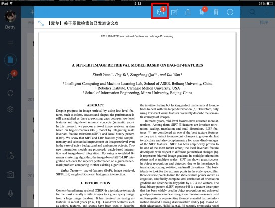
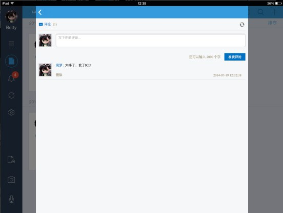
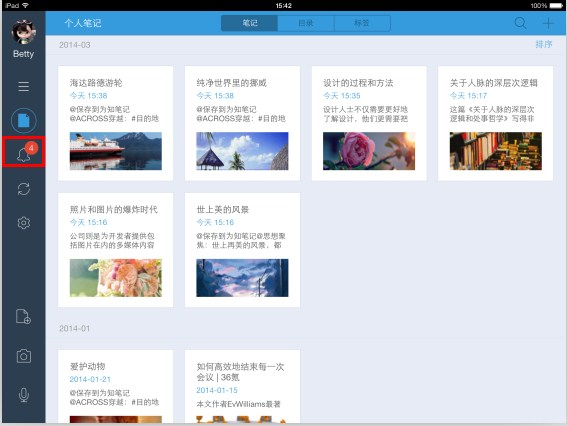

为知笔记帮助团队中的成员简单方便地把自己的知识经验记录下来并分享到企业群组中。来自不同成员的知识逐步积累成一个团队知识库，在目录层级管理和强大搜索功能帮助下，团队成员可以随时随地找到自己需要的知识。
为知笔记让团队形成一个“工作圈”，通过成员间的消息通知、笔记评论等功能，可以快速实现内部沟通交流。在多种笔记终端，尤其是手机终端的支持下，每个团队成员，无论何时何地都可以跟团队保持着工作上的紧密联系。
在为知笔记中，管理者可以通过各种终端随时随地浏览下属的工作笔记，了解他们的工作进展，并通过评论功能进行管理反馈。团队成员使用为知笔记创建各种类型的工作笔记，只需通过一个简单的@功能，就可以提交给上级领导，无需再依靠email和office，团队中的工作管理变得简单和高效。
iPad客户端提供了简单明了的后台管理。创建好团队后可以通过创建者、团队管理员可以通过“团队管理”进入后台管理界面进行团队管理。 团队后台管理包括：群组管理、成员管理和团队设置
您可以利用群组管理完成新建群组、添加成员、和群组成员权限控制等操作。
您可以利用成员管理，执行添加团队成员，修改成员权限和昵称的操作
在团队设置里，可以更改团队信息
1.团队成员角色
成员角色，是指该用户在团队中的管理角色分两种：
创建者：仅有一人，是团队最高管理者，角色不可改，具有最高权限
2.成员权限是针对群组界定的 包括：
更多详细说明请点击：企业服务 团队成员角色与群组权限对比说明
移动端支持创建根目录、子目录。可以在群众下搭建适合自己公司的目录结构。
大批量的资料导入建议在电脑客户端或者Web端进行，移动端可以用来写一些工作日志，或者外出的记录和图片。同时可以导入多种文件格式的附件。
在群众里，可以通过以下方式在消息中心接受到消息通知



为知笔记可以提供多人编辑一篇笔记，来提高团队工作效率。但是，这里需要注意当一个成员在编辑的时候，另外的客户端会出现**成员正在编辑笔记，此时不要进行编辑。待该成员保存成功后再编辑。
如果作为领导的你这在外出，但是需要做一些简单的任务分配给员工，可以通过iPhone客户端的任务清单功能，分配一下任务